This document demonstrates how to integrate Solace Java Message Service (JMS) with the WebLogic Application Server for production and consumption of JMS messages. The goal of this document is to outline best practices for this integration to enable efficient use of both the application server and Solace JMS.
The target audience of this document is developers using the WebLogic Application Server with knowledge of both the WebLogic Application Server and JMS in general. As such this document focuses on the technical steps required to achieve the integration.
Note this document provides instructions on configuring and deploying the Solace JCA 1.5 resource adapter using the web console application of WebLogic, as well as instructions on configuring Solace as a Foreign JMS Provider Module. For detailed background on either Solace JMS or the WebLogic Application Server refer to the referenced documents below.
This document is divided into the following sections to cover the Solace JMS integration with WebLogic Application Server:
- Integrating with WebLogic Application Server
- Performance Considerations
- Working with Solace High Availability
- Debugging Tips
- Advanced Topics including:
- Using SSL Communication
- Working with Transactions
- Working with Solace Disaster Recovery
Related Documentation
These links contain information related to this guide:
This tutorial requires access to Solace PubSub+ event broker and requires that you know several connectivity properties about your event broker. Specifically you need to know the following:
Resource | Value | Description |
Host | String | This is the address clients use when connecting to the event broker to send and receive messages. (Format: |
Message VPN | String | The event broker Message VPN that this client should connect to. |
Client Username | String | The client username. (See Notes below) |
Client Password | String | The client password. (See Notes below) |
There are several ways you can get access to Solace messaging and find these required properties.
Option 1: Use Solace Cloud
- Follow these instructions to quickly spin up a cloud-based Solace messaging service for your applications.
- The messaging connectivity information is found in the service details in the connectivity tab (shown below). You will need:
- Host:Port (use the JMS URI)
- Message VPN
- Client Username
- Client Password

Option 2: Start a Solace PubSub+ Software Event Broker
- Follow these instructions to start the software event broker in leading Clouds, Container Platforms or Hypervisors. The tutorials outline where to download and how to install the Solace software event broker.
- The messaging connectivity information are the following:
- Host: <public_ip> (IP address assigned to the software event broker in tutorial instructions)
- Message VPN: default
- Client Username: sampleUser (can be any value)
- Client Password: samplePassword (can be any value)
Option 3: Get access to a Solace PubSub+ appliance
- Contact your Solace PubSub+ appliance administrators and obtain the following:
- A Solace Message-VPN where you can produce and consume direct and persistent messages
- The host name or IP address of the appliance hosting your Message-VPN
- A username and password to access the appliance
Solace provides a JCA compliant resource adapter for integrating Java enterprise applications with the Solace JMS event broker. There are two options for integrating Solace with WebLogic for use by Java enterprise applications including embedded and stand-alone deployment. This section will cover instructions on configuring the Resource Adapter Archive (RAR) file for stand-alone deployment, and configuring Solace as a Foreign JMS Provider
In order to illustrate WebLogic Application Server integration, the following sections will highlight the required WebLogic configuration changes and provide sample code for sending and receiving messages using Enterprise Java Beans.
This EJB sample consists of two enterprise beans, a Message Driven Bean and a Session Bean. The MDB is configured to receive a message on a "requests" Queue. When the MDB receives a message it then calls a method of the Session Bean to send a reply message to a "reply" Queue. The EJB sample requires configuration of various J2C entities in WebLogic to support usage of the Solace JCA compliant resource adapter.
The following steps are required to accomplish the above goals of sending and receiving messages using the Solace JMS event broker.
Description of Resources Required
The Solace JCA 1.5 resource adapter is provided as a standalone RAR file and is versioned together with a specific release of the Solace JMS API. The JMS API libraries are bundled inside a single resource adapter RAR file for deployment to the WebLogic application server.
- Resource: Solace JCA 1.5 resource adapter stand-alone RAR file (sol-jms-ra-%RELEASE%.rar)
- Donwload Options:
- Solace Developer Portal - Under JMS API
- Solace Customer SFTP - Path:
%VERSION%/Topic_Routing/APIs/JMS/Current/%RELEASE%
This integration guide will demonstrate the creation of Solace resources and the configuration of the WebLogic Application Server"s managed resources. The section below outlines the resources that are created and used in the subsequent sections.
Solace Resource Naming Convention
To illustrate this integration example, all named resources created on the Solace Event Broker will have the following prefixes:
Resource | Prefix |
Non-JNDI resource | solace_%RESOURCE_NAME% |
JNDI names | JNDI/Sol/%RESOURCE_NAME% |
Solace Resources
The following Solace event broker resources are required for the integration sample in this document.
Resource | Value | Description |
Solace Event Broker Host | Refer to section 2- Get Solace Messaging for values | |
Message VPN | ||
Client Username | ||
Client Password | ||
Solace Queue | solace_requests | Solace destination for messages consumed by JEE enterprise application |
Solace Queue | solace_replies | Solace destination for messages produced by JEE enterprise application |
JNDI Connection Factory | JNDI/Sol/CF | The JNDI Connection factory for controlling Solace JMS connection properties |
JNDI Queue Name | JNDI/Sol/Q/requests | The JNDI name of the queue used in the samples |
JNDI Queue Name | JNDI/Sol/Q/replies | The JNDI name of the queue used in the samples |
Application Server Resource Naming Convention
To illustrate this integration example, all named resources created in WebLogic application server will have the following prefixes:
Resource | Prefix |
Non-JNDI resource | j2c_%RESOURCE_NAME% |
JNDI names | JNDI/J2C/%RESOURCE_NAME% |
Application Server Resources
The following WebLogic application server resources are required for the integration example in this document.
Resource | JNDI Name | JNDI Value | Description |
Resource Adapter | sol-jms-ra | JNDI/J2C/RA/sol-jms-ra | The Solace JMS Resource Adapter packaged as a Standalone RAR package (Implements a JCA compliant Resource Adapter) |
J2C connection factory | j2c_cf | JNDI/J2C/CF | A J2C entity used to access a Solace javax.jms.ConnectionFactory (For Outbound messaging) |
J2C administered object | j2c_request_queue | JNDI/J2C/Q/requests | A J2C entity used to perform a JNDI lookup of a javax.jms.Queue on the Solace event broker |
J2C administered object | j2c_reply_queue | JNDI/J2C/Q/replies | A J2C entity used to perform a JNDI lookup of a javax.jms.Queue on the Solace event broker |
Solace JMS provider Configuration
The following entities on the Solace event broker need to be configured at a minimum to enable JMS to send and receive messages within the WebLogic Application Server.
- A Message VPN, or virtual event broker, to scope the integration on the Solace event broker.
- Client connectivity configurations like usernames and profiles
- Guaranteed messaging endpoints for receiving and sending messages.
- Appropriate JNDI mappings enabling JMS clients to connect to the Solace event broker configuration.
The recommended approach for configuring a event broker is using Solace PubSub+ Manager, Solace's browser-based administration console packaged with the Solace PubSub+ event broker. This document uses CLI as the reference to remain concise - look for related settings if using Solace PubSub+ Manager.
For more details related to event broker CLI see Solace-CLI. Wherever possible, default values will be used to minimize the required configuration. The CLI commands listed also assume that the CLI user has a Global Access Level set to Admin. For details on CLI access levels please see User Authentication and Authorization.
This section outlines how to create a message-VPN called "solace_VPN" on the event broker with authentication disabled and 2GB of message spool quota for Guaranteed Messaging. This message-VPN name is required in the configuration when connecting to the messaging event broker. In practice, appropriate values for authentication, message spool and other message-VPN properties should be chosen depending on the end application's use case.
> home
> enable
# configure
(config)# create message-vpn solace_VPN
(config-msg-vpn)# authentication
(config-msg-vpn-auth)# user-class client
(config-msg-vpn-auth-user-class)# basic auth-type none
(config-msg-vpn-auth-user-class)# exit
(config-msg-vpn-auth)# exit
(config-msg-vpn)# no shutdown
(config-msg-vpn)# exit
(config)#
(config)# message-spool message-vpn solace_VPN
(config-message-spool)# max-spool-usage 2000
(config-message-spool)# exit
(config)#
Configuring Client Usernames & Profiles
This section outlines how to update the default client-profile and how to create a client username for connecting to the Solace event broker. For the client-profile, it is important to enable guaranteed messaging for JMS messaging and transacted sessions for the XA-transactions capable Solace JCA Resource Adapter. The chosen client username of "solace_user" will be required by the WebLogic Application Server when connecting to the Solace event broker.
(config)# client-profile default message-vpn solace_VPN
(config-client-profile)# message-spool allow-guaranteed-message-receive
(config-client-profile)# message-spool allow-guaranteed-message-send
(config-client-profile)# message-spool allow-guaranteed-endpoint-create
(config-client-profile)# message-spool allow-transacted-sessions
(config-client-profile)# exit
(config)#
(config)# create client-username solace_user message-vpn solace_VPN
(config-client-username)# acl-profile default
(config-client-username)# client-profile default
(config-client-username)# no shutdown
(config-client-username)# exit
(config)#
Setting up Guaranteed Messaging Endpoints
This integration guide shows receiving messages and sending reply messages within the WebLogic Application Server using two separate JMS Queues. For illustration purposes, these queues are chosen to be exclusive queues with a message spool quota of 2GB matching quota associated with the message VPN. The queue names chosen are "solace_requests" and "solace_replies".
(config)# message-spool message-vpn solace_VPN
(config-message-spool)# create queue solace_requests
(config-message-spool-queue)# access-type exclusive
(config-message-spool-queue)# max-spool-usage 2000
(config-message-spool-queue)# permission all delete
(config-message-spool-queue)# no shutdown
(config-message-spool-queue)# exit
(config-message-spool)# create queue solace_replies
(config-message-spool-queue)# access-type exclusive
(config-message-spool-queue)# max-spool-usage 2000
(config-message-spool-queue)# permission all delete
(config-message-spool-queue)# no shutdown
(config-message-spool-queue)# exit
(config-message-spool)# exit
(config)#
Setting up Solace JNDI References
To enable the JMS clients to connect and look up the queue destination required by WebLogic Application Server, there are three JNDI objects required on the Solace event broker:
- A connection factory: JNDI/Sol/CF
- Note: Ensure
direct-transportis disabled for JMS persistent messaging.
- Note: Ensure
- A queue destination: JNDI/Sol/Q/requests
- A queue destination: JNDI/Sol/Q/replies
They are configured as follows:
Note: this will configure a connection factory without XA support as the default for the XA property is False. See section Enabling XA Support for JMS Connection Factories for XA configuration.
(config)# jndi message-vpn solace_VPN
(config-jndi)# create connection-factory JNDI/Sol/CF
(config-jndi-connection-factory)# property-list messaging-properties
(config-jndi-connection-factory-pl)# property default-delivery-mode persistent
(config-jndi-connection-factory-pl)# exit
(config-jndi-connection-factory)# property-list transport-properties
(config-jndi-connection-factory-pl)# property direct-transport false
(config-jndi-connection-factory-pl)# property "reconnect-retry-wait" "3000"
(config-jndi-connection-factory-pl)# property "reconnect-retries" "20"
(config-jndi-connection-factory-pl)# property "connect-retries-per-host" "5"
(config-jndi-connection-factory-pl)# property "connect-retries" "1"
(config-jndi-connection-factory-pl)# exit
(config-jndi-connection-factory)# exit
(config-jndi)#
(config-jndi)# create queue JNDI/Sol/Q/requests
(config-jndi-queue)# property physical-name solace_requests
(config-jndi-queue)# exit
(config-jndi)#
(config-jndi)# create queue JNDI/Sol/Q/replies
(config-jndi-queue)# property physical-name solace_replies
(config-jndi-queue)# exit
(config-jndi)#
(config-jndi)# no shutdown
(config-jndi)# exit
(config)#
Solace provides a JCA compliant Resource Adapter that can be deployed to the WebLogic application server, allowing Enterprise Java Beans to connect to Solace through a standard JCA interface. This integration guide outlines the steps to deploy the resource adapter which is provided by Solace as a packaged stand-alone RAR file. This is the recommended way of integrating Solace with WebLogic as it provides support for XA transactions.
The following Java system property must be configured in the application server JVM properties:
-Dweblogic.mdb.JMSProviders.NeedContinuousPolling=soljms
This allows WebLogic to function correctly with a non-Oracle JMS provider.
Depending on your environment, this can be done by editing the startWebLogic.cmd or startWebLogic.sh file, which can be found in <WL_domain>/bin folder. Add the following at the start of the script:
JAVA_OPTIONS="-Dweblogic.mdb.JMSProviders.NeedContinuousPolling=soljms ${JAVA_OPTIONS}"
Add the Solace JMS jar files to the WebLogic libraries
The following steps will make the Solace resource adapter have access to the Solace JMS libraries. Steps to place the Solace libraries into the WebLogic CLASSPATH:
- Expand the Solace JMS Resource Adapter .rar file.
- Copy all of the .jar files to the <WL_domain>/lib folder on the WebLogic server. On startup, WebLogic automatically detects and appends files in this folder to the CLASSPATH.
Adding the Resource Adapter as a Deployment
The following steps will make the Solace resource adapter available to all enterprise applications (Refer to the above section "Description of Resources Required" for the file location of the Solace JCA 1.5 Resource Adapter RAR file).
Steps to deploy the Solace JMS Resource Adapter:
- Step 1. Log into the WebLogic Application Server administrative console. This is defaulted to
http://localhost:7001/console - Step 2. Click on the "Deployments" link in the navigation pane and in the "Deployments" table, click on the "Install" button
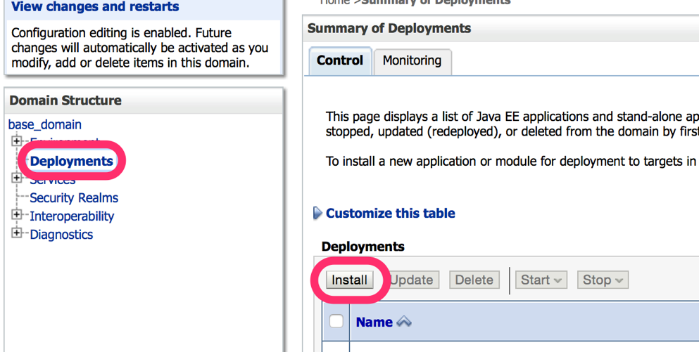
- Step 3. In the Install Application Assistant page, select the file path to the Solace JMS Resource Adapter RAR (.rar) file, then click on the "Next" button. Note that this is the Resource Adapter RAR file, and not the sol-jms-ra-%VERSION% JAR file that is obtained from decompressed the RAR file.
- Step 4. Select "Install this deployment as an application" and click the "Next" button
- Step 5. Assign the adapter a suitable name, such as sol-jms-ra-%VERSION%
- Step 6. Click the "Finish" link to commit the changes to the application server. Several errors such as "ConnectionFactoryJndiName cannot be empty" will be reported, and can be safely ignored as the configuration is not yet completed.
- Step 7. Navigate to the "Deployments" page again and click on the adapter name.
Configuring the connection to Solace JMS provider
Connecting to the Solace event broker through the Solace JMS Resource Adapter requires configuration of additional resources in WebLogic. Two key pieces of information are required including connectivity information to the Solace event broker and client authentication data.
The above information is specified across one or more J2C entities depending on your application"s JMS message flow (Inbound, Outbound, or both).
The Solace resource adapter includes several custom properties for specifying connectivity and authentication details to the Solace Event Broker. Setting these properties at the Resource Adapter level makes the information available to all child J2C entities like J2C connection factory, and J2C administered objects. The properties can also be overridden at the J2C entity level allowing connectivity to multiple Solace event brokers.
Please refer to [WL-REF] and [JCA-1.5] for more details on configuring general JEE authentication options. The Authentication section below discusses configuration of Solace specific authentication in more detail.
Steps to configure the Solace JMS Resource Adapter:
- Step 1. Log into the WebLogic Application Server administrative console.
- Step 2. Click on the "Deployments" link in the navigation pane
- Step 3. Click on the resource adapter to begin its configuration.
- Step 4. In the "Overview" tab, modify the deployment order to ensure that the adapter has a lower value than any application that will depend on the JMS connection provided by the RA. This is to ensure that the RA is deployed first.
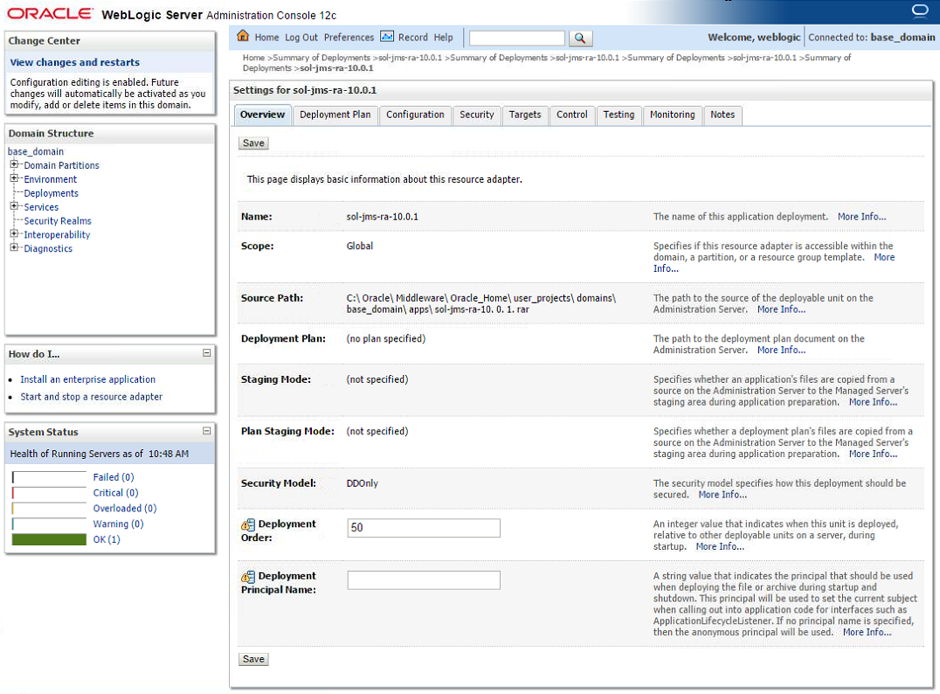
General Configuration
In the "Configuration > General" tab, add a JNDI name for the solace resource adapter.
- Step 1. This example uses JNDI/J2C/RA/sol-jms-ra as the JNDI name.
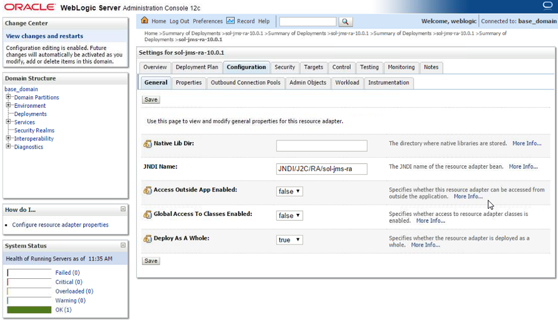
- Step 2. Click on the "Save" button to commit the changes to the application server.
- Step 3. When the server prompts for a Deployment Plan to be created, configure its desired location. More details on deployment plan files can be found at the "Configuring Applications for Production Deployment": http://docs.oracle.com/cd/E12839_01/web.1111/e13702/config.htm#DEPGD169
Properties Configuration
In the "Configuration > Properties" tab, edit the connectivity properties for the Solace JMS Resource Adapter. Values entered here will be inherited by the adapter"s outbound connection pools and admin objects. Values are entered by clicking in the "Property Value" column and confirming each value with the Enter key.
- Step 1. Update the value for the properties "ConnectionURL", "UserName", "Password", and "MessageVPN":
- Step a. Click on the "ConnectionURL" property and specify the value "tcp://IP:Port" (Update the value "IP:Port" with the actual Solace event broker message-backbone VRF IP ).
- Step b. Click on the "MessageVPN" property and specify the value corresponding to the Solace message VPN ("solace_VPN" for this example). Press Enter to input the change.
- Step c. Click on the "UserName" property and specify the value corresponding to the Solace username ("solace_user" for this example). Press Enter to input the change.
- Step d. Click on the "Password" property and specify the value for the Solace username if required (Note, this example specified a Solace authentication type of "none", so the password here will be ignored).
- Step e. Click on the "Save" button to commit the changes to the application server.
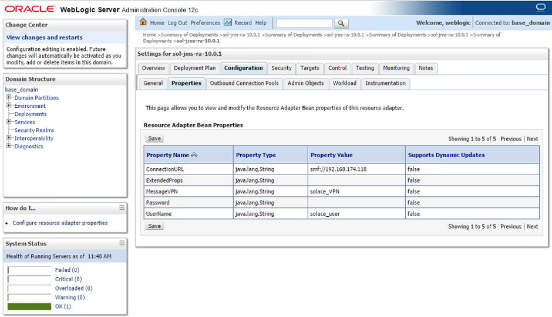
The following table summarizes the values used for the resource adapter"s bean properties.
Name | Value | Description | |
ConnectionURL | tcp://__IP:Port__ | The connection URL to the Solace event broker of the form: `tcp://__IP:Port__` (Update the value "__IP:Port__" with the actual Solace event broker message-backbone VRF IP) | |
messageVPN | solace_VPN | A Message VPN, or virtual event broker, to scope the integration on the Solace event broker. | |
UserName | solace_user | The client username credentials on the Solace Event Broker | |
Password | Optional password of the Client Username on the Solace Event Broker | ||
ExtendedProps | Semicolon-separated list for [advanced control of the connection](https://docs.solace.com/Solace-JMS-API/JMS-Properties-Reference.htm) . For this example, leave empty. Supported values are shown below. | ||
Extended Properties Supported Values:
- Solace_JMS_Authentication_Scheme
- Solace_JMS_CompressionLevel
- Solace_JMS_JNDI_ConnectRetries
- Solace_JMS_JNDI_ConnectRetriesPerHost
- Solace_JMS_JNDI_ConnectTimeout
- Solace_JMS_JNDI_ReadTimeout
- Solace_JMS_JNDI_ReconnectRetries
- Solace_JMS_JNDI_ReconnectRetryWait
- Solace_JMS_SSL_ValidateCertificateDate
- Solace_JMS_SSL_ValidateCertificate
- Solace_JMS_SSL_CipherSuites
- Solace_JMS_SSL_KeyStore
- Solace_JMS_SSL_KeyStoreFormat
- Solace_JMS_SSL_KeyStorePassword
- Solace_JMS_SSL_PrivateKeyAlias
- Solace_JMS_SSL_PrivateKeyPassword
- Solace_JMS_SSL_ExcludedProtocols
- Solace_JMS_SSL_TrustStore
- Solace_JMS_SSL_TrustStoreFormat
- Solace_JMS_SSL_TrustStorePassword
- Solace_JMS_SSL_TrustedCommonNameList
For example: Solace_JMS_CompressionLevel=9
Configuring destinations
- Step 1. To create a new Destination, in the list of Destination types, click the New button.
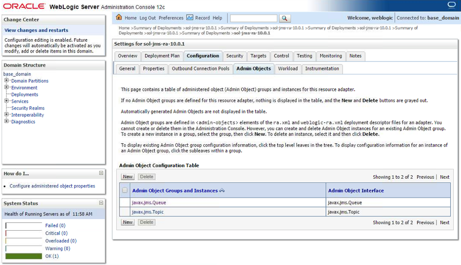
- Step 2. In the following screen, select the desired destination type and click Next.
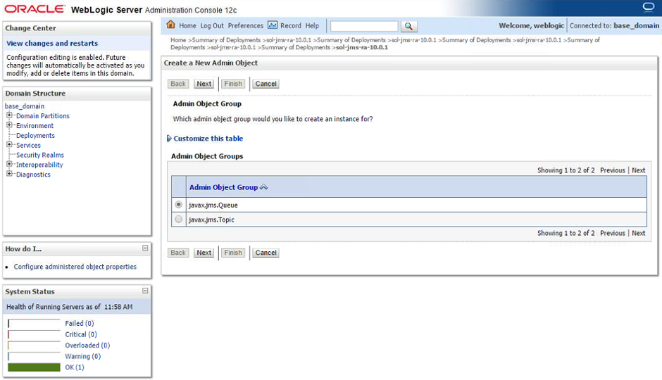
- Step 3. The next screen allows you to specify the JNDI name for the destination inside of the WebLogic server. A WebLogic client will later use this string to look up the destination from the WebLogic JNDI.
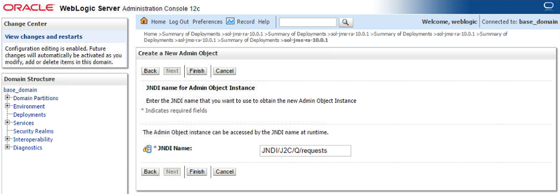
Enter the local JNDI name for the destination and click Finish.
- Step 4. Going back to the Admin Objects tab, a navigable tree component (+) is visible on the destination type type. Click on the (+) to expand the list of destinations. Click on the admin object in order to configure its details.
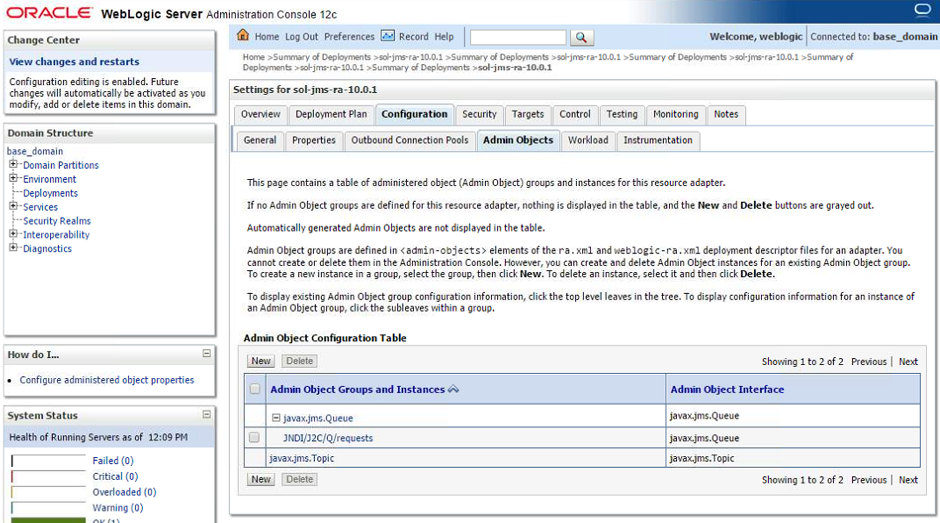
- Step 5. In the Properties section, the connectivity to the Solace Event Broker is configured. Enter the remote JNDI name as configured at the Solace Event Broker for the destination to connect to and confirm the settings with the Save button. Similarly to the connection factory configuration, fields left empty will inherit the configuration from the resource adapter"s configuration in WebLogic.
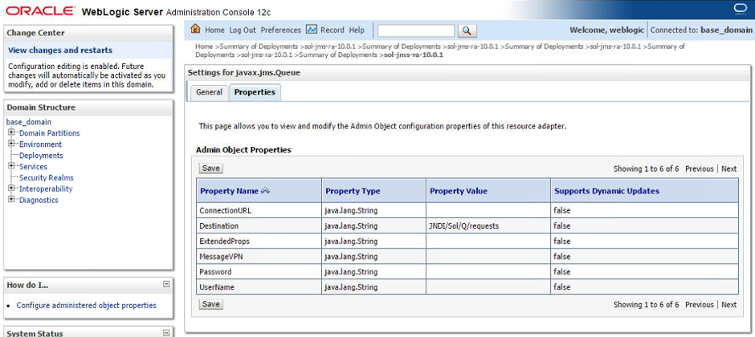
Enter the remote JNDI name for the destination and "Save" to save your configuration.
Configuring connection factories
- Step 1. Log into the WebLogic Application Server administrative console.
- Step 2. Click on the "Deployment > > Configuration > Outbound Connection Pools
- Step 3. In the Outbound Connection Pool Configuration Table, click on the "New" button.
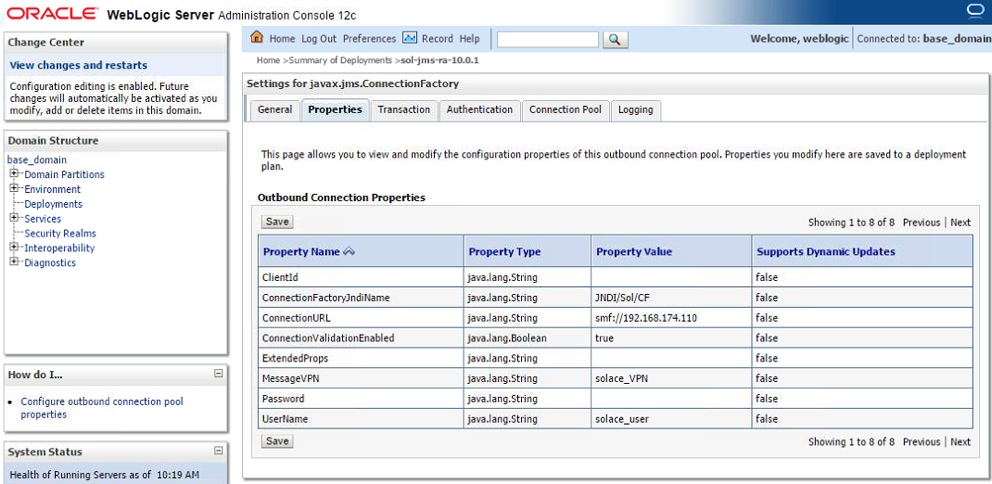
- Step 4. Specify type of connection factory to use (javax.jms.ConnectionFactory) and click Next.
- Step 5. Specify a unique JNDI Name for this J2C Connection Factory ("JNDI/J2C/CF" for this example) and click Finish.
- Step 6. In the Outbound Connection Pool Configuration Table, there is now a navigable tree component (+) on the connection factory type. Click on the (+) to expand the list and click on the connection factory.
- Step 7. Edit the J2C Connection Factory:
- Step a. Specify values for two custom properties, "ConnectionFactoryJndiName" and "ConnectionValidationEnabled".
- Step b. Click on the "Property Value" column for "ConnectionFactoryJndiName" and specify the value "JNDI/Sol/CF". (Note, this is the value configured on the Solace event broker in Section 0 Setting up Solace JNDI References).
- Step c. Click on the "Property Value" column for "ConnectionValidationEnabled" and specify the value "true".
- Step d. Ensure that other necessary values, such as ConnectionURL, MessageVPN and UserName were correctly inherited from the RA"s configuration (done in step 3.4)
- Step e. Click on the "save" button to commit your changes to the application server.
The following table summarizes the values used for the J2C connection factory custom properties.
Name | Value | Description |
ConnectionFactoryJndiName | JNDI/Sol/CF | The JNDI name of the JMS connection factory as configured on the Solace event broker. |
ConnectionValidationEnabled | true | Enable the validation of connections. While not strictly necessary, it is recommended to set it to "true". |
- Step 8. Use the Transaction tab to set the transactions support for the connection. Select the desired level of transaction support and confirm with Save. Note: The transaction support should match with your client using the connection. E.g. a WebApp client usually will not have transaction support while EJB will have it, depending on the settings of their deployment. Transaction support = "XA Transaction" requires the use of an XA Connection Factory.
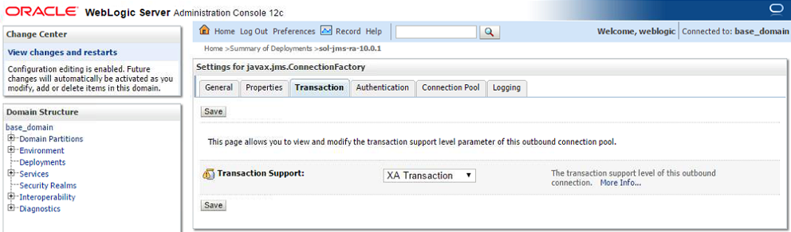
- Step 9. Under the Authentication tab, you can configure the Reauthentication Support and the Resource Authentication Source to configure whether to use Container Based or Application Based.
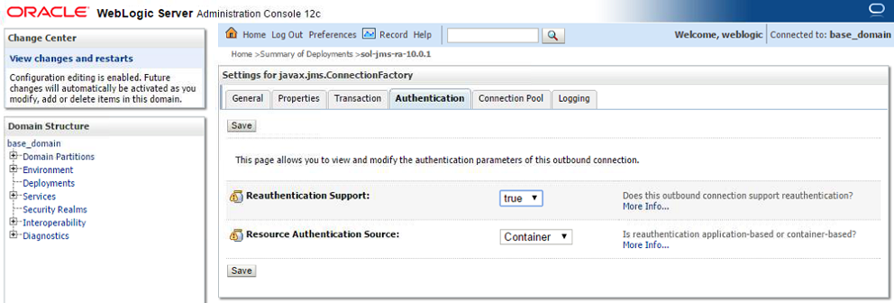
Configuring connection pooling for a connection factory
The Connection Pool tab allows the configuration of the amount of concurrent connections that are run between the WebLogic server and the Solace Event Broker. Those connections are shared between the requests coming from the applications, therefore the resources can be used more efficiently (limited number of connections) and optimized for performance (pre-initialized connections).
The amounts to be set vary, depending on the demand of the WebLogic application(s). Capacity planning and load testing should identify the appropriate values. E.g. if only every 3rd request is using messaging, the pool size can be reduced approximately by that factor from the maximum amount of concurrent requests.
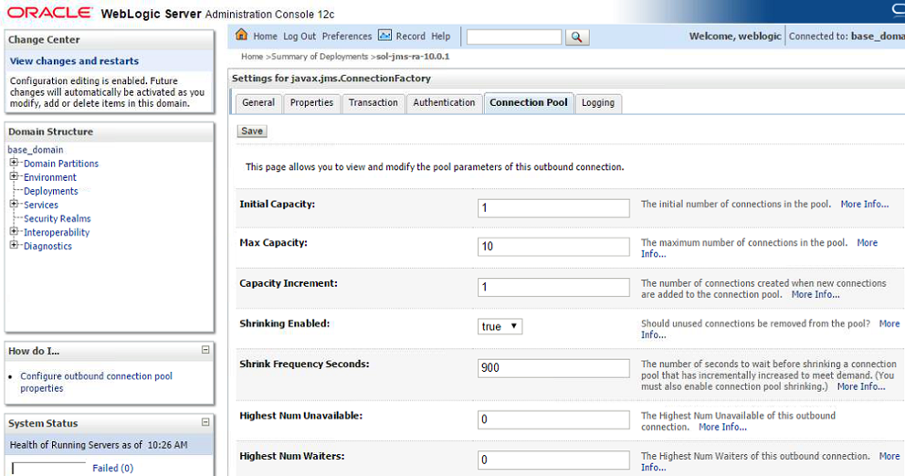
The most relevant values are:
S.No | Key | Value |
1 | Initial Capacity | Number of connections to the Solace Event Broker initially available in the pool for this connection factory. |
2 | Max Capacity | Maximum number of connection created for this pool. |
3 | Capacity Increment | The number of connections created when the demand exceeds the current amount of connections. A higher value meets demand spikes more efficiently but can use more resources. |
4 | Shrinking enabled | Connections can be released if demand is low, freeing up resources. |
5 | Highest Num Unavailable | Size of a list for connections that failed creation. Attempts to reconnect are periodically made for entries on this list. |
6 | Highest Num of Waiters | Number of clients that can wait for a connection if all available connections are currently in use. This controls the "overflow" size for client requests before an "unavailable resource" exception is thrown. |
Save and return to the resource adapter configuration page.
Redeploy the resource adapter with the new settings
In the "Deployments" page, select the checkbox for the resource adapter and click on Update. Select "Redeploy this application using the following deployment files" and click on Finish. This redeploys the adapter so that all of the above changes become active.
If a resource adapter is not used, the following steps should be followed in order to set up Solace as a foreign JMS provider on the WebLogic server.
This option is deprecated and does not support XA transactions.
New deployments should deploy using the resource adapter.
Adding Solace as a new Foreign Server JMS Module
- Step 1. Log in to the WebLogic admin console at the administration port once WebLogic is running. From the left menu, Open the Services > Messaging menu, and click on the JMS Modules link.
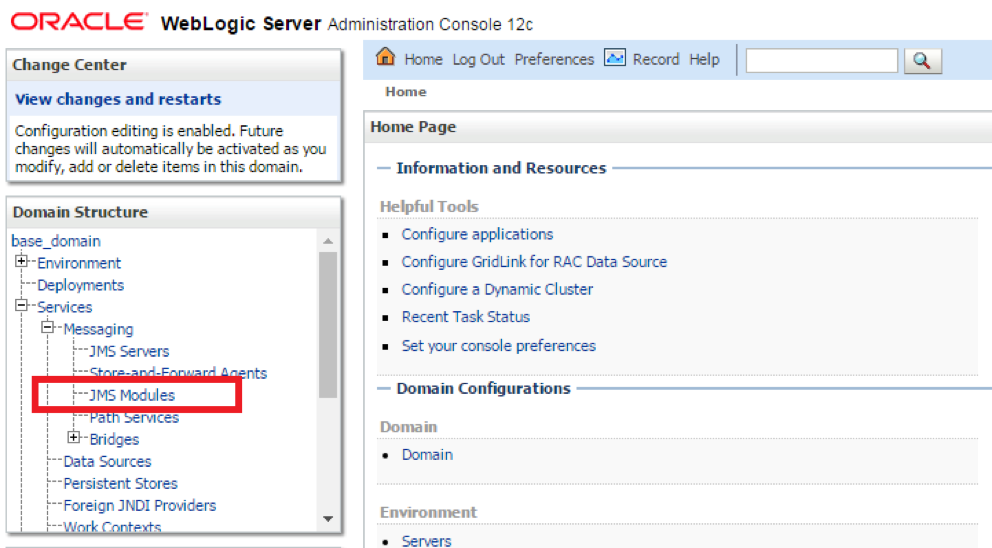
- Step 2. On the landing page, click New to add a new JMS Module
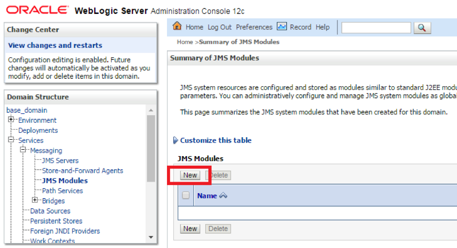
- Step 3. Provide the name for the JMS Module and click next.
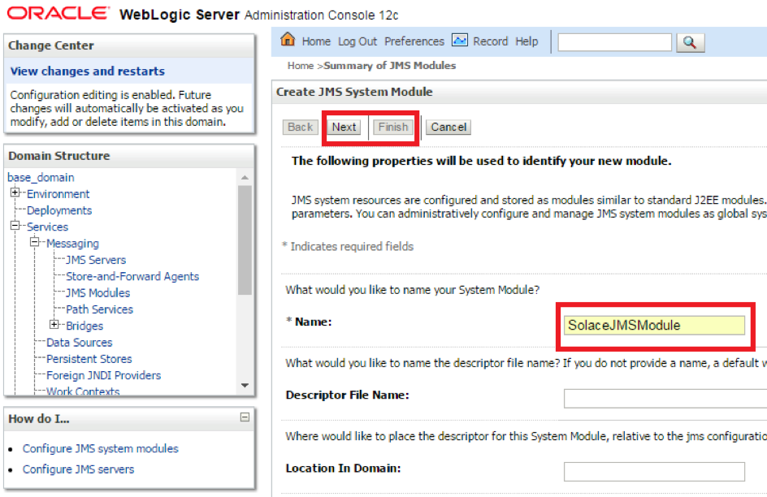
- Step 4. Target the mapping as desired for the JMS module, depending on which server(s) the applications will be deployed on, and click next.
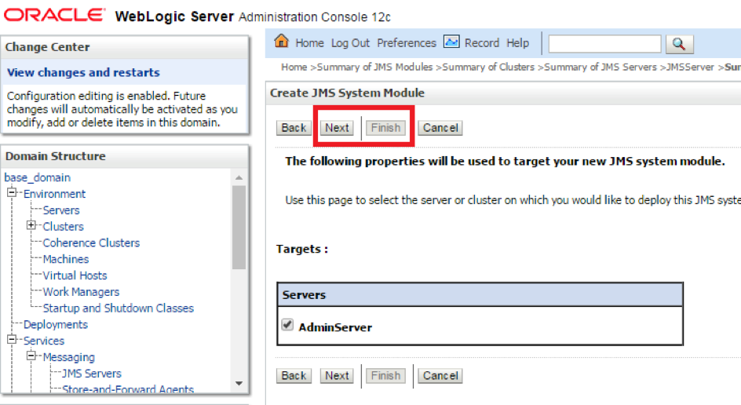
- Step 5. Click Finish to end the flow, but select the checkbox to add additional resources. This will be done in the next steps.
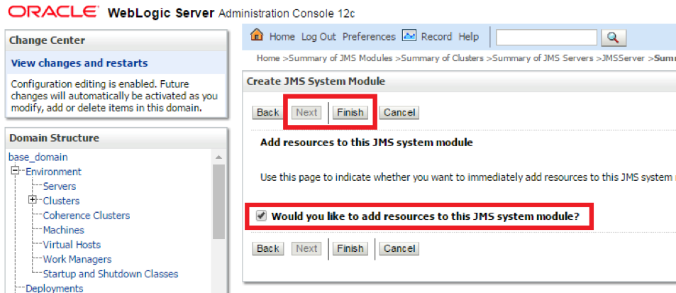
- Step 6. Click new to add a Foreign Server
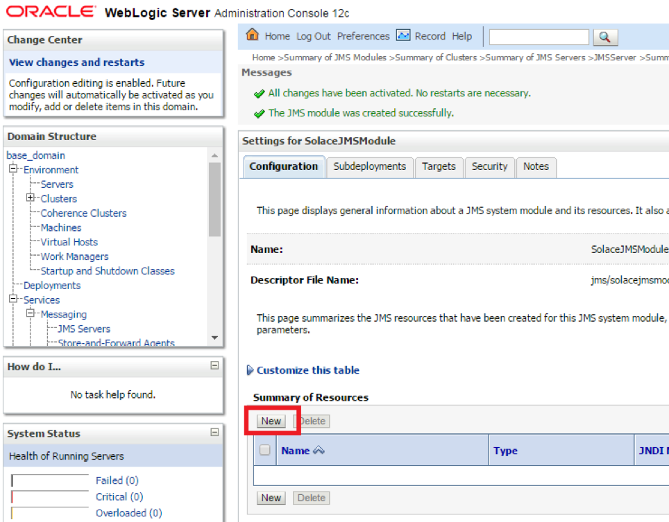
- Step 7. Choose Foreign Server from the Radio Button List to add Solace as anew Foreign Server
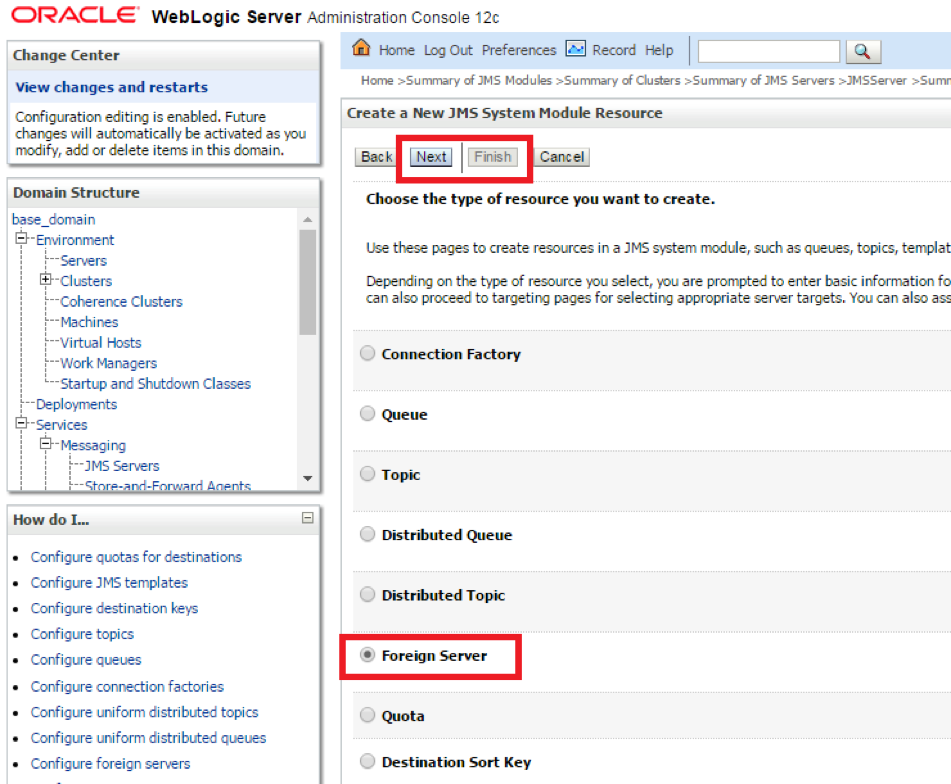
- Step 8. Provide a name for the Foreign Server and click Next.
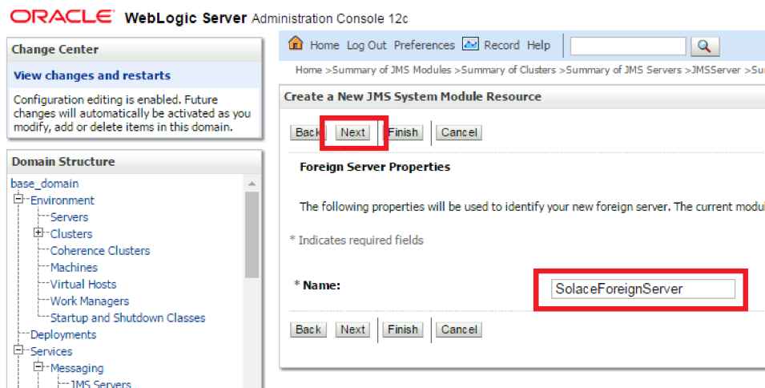
- Step 9. The appropriate targets will automatically get assigned. Click Finish to complete the Foreign Server addition.
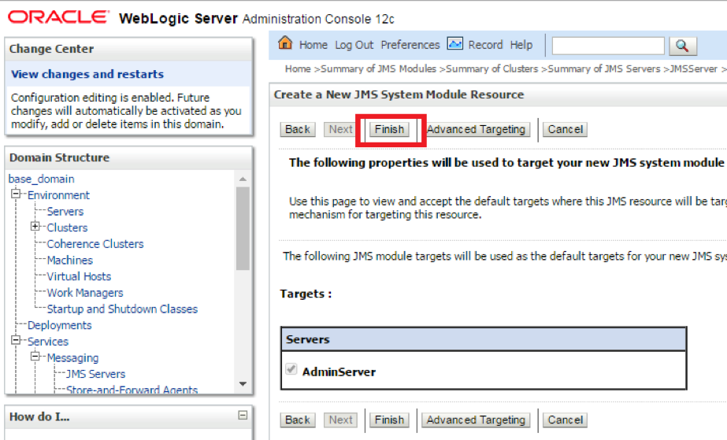
Configuring the connection to Solace
- Step 1. Click on the newly created Foreign Server to open the configuration page. The General Tab will open.
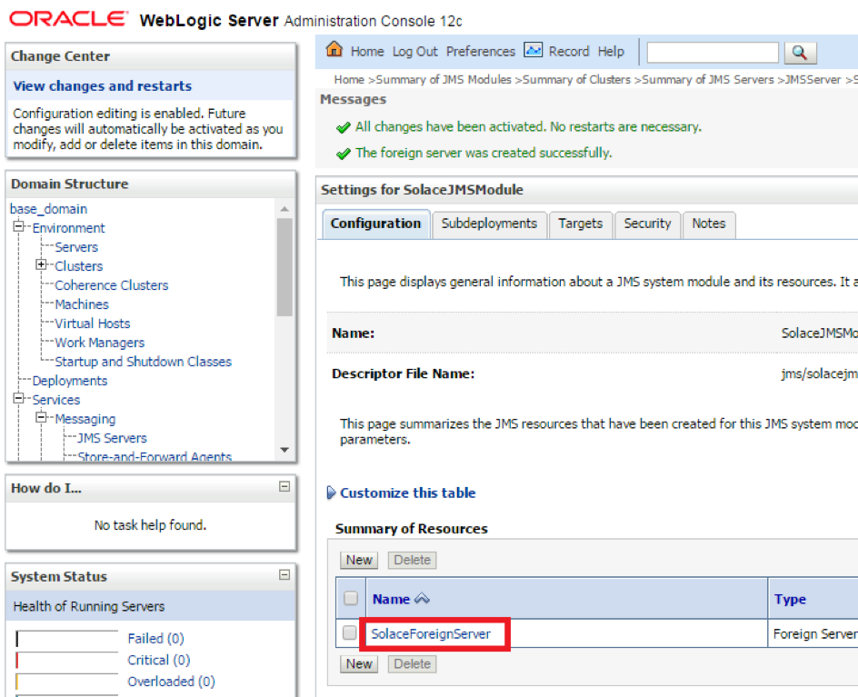
- Step 2. Enter the following values in the fields and click Save
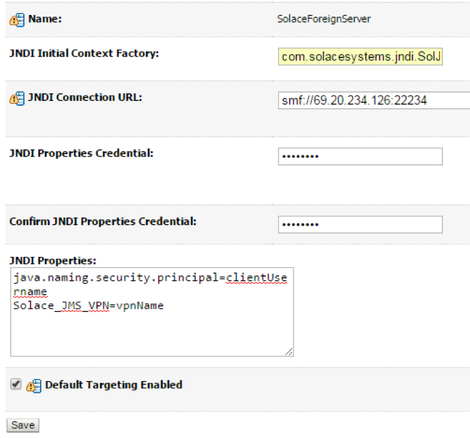
S.No | Key | Value |
1 | JNDI Initial Context Factory | com.solacesystems.jndi.SolJNDIInitialContextFactory |
2 | JNDI Connection URL | tcp://HOST:PORT e.g. tcp://69.20.234.126:22234 |
3 | JNDI Properties Credentials | Password of the Client Username for Solace. |
4 | JNDI Properties | Individual custom properties. Properties are delimited by the Enter key and are set as Key=Value pairs. The following 2 properties must be set: java.naming.security.principal=%CLIENT_USERNAME%, Solace_JMS_VPN=%VPN_NAME% |
Configuring destinations
- Step 1. Click on the Destinations Tab to add new Destinations (Queues or Topics)
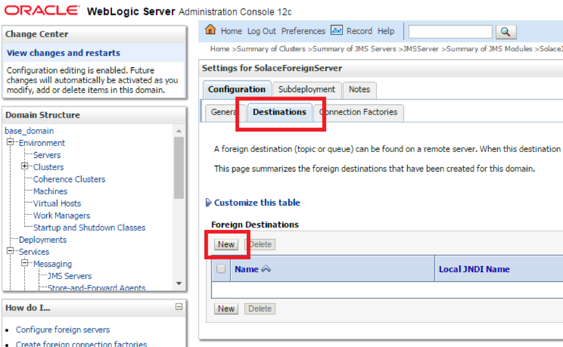
- Step 2. Enter the Local and Remote JNDI Names of the Destination
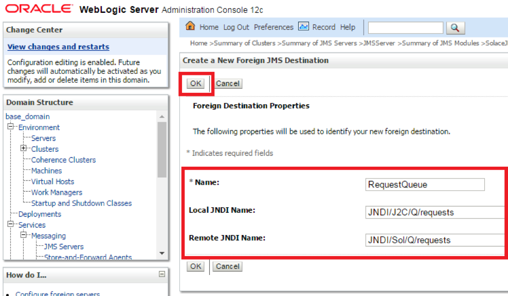
S.No | Key | Value |
1 | Name | Desired local name of the Destination |
2 | Local JNDI Name | This is the JNDI name which MDBs and other resources deployed on WebLogic will use to publish and subscribe to Destinations |
3 | Remote JNDI Name | This is the JNDI name for the Destination as configured on the Solace Event Broker for the Endpoint. This can be configured using SolAdmin from the JMS Tab |
Configuring connection factories
- Step 1. Click on the Connection Factories tab, and click New to add a new foreign connection factory
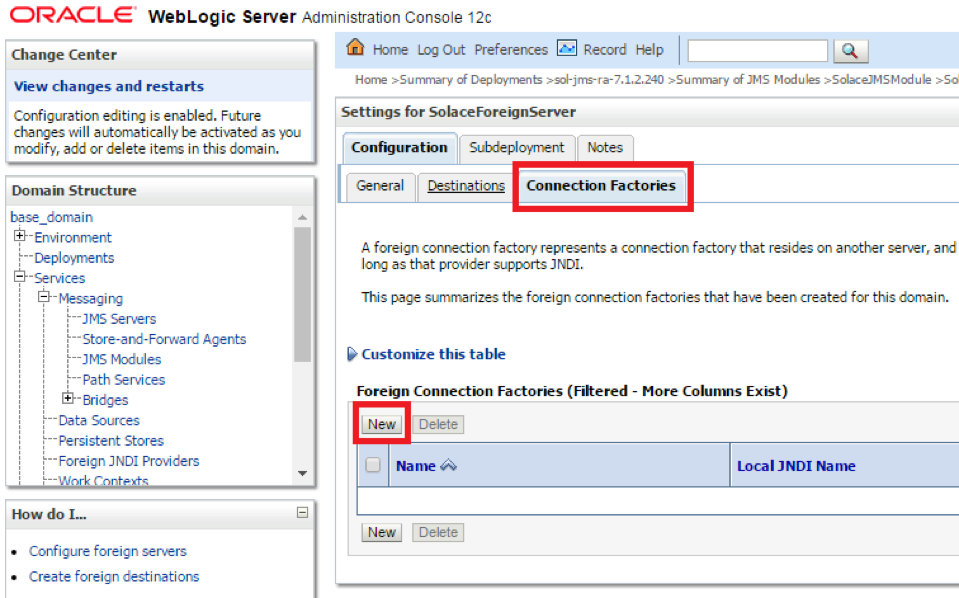
- Step 2. Enter the values for Name, Local and Remote JNDI Names
S.No | Key | Value |
1 | Name | Any text name, not used in code |
2 | Local JNDI Name | This is the JNDI name which MDBs and other resources deployed on WebLogic will use to lookup the connection factory to connect to Solace |
3 | Remote JNDI Name | This is the JNDI name for the Connection Factory as configured on the Solace Event Broker. This can be configured using CLI or through SolAdmin from the JMS Tab |
The sample code linked below shows the implementation of a message-driven bean (ConsumerMDB) which listens for JMS messages to arrive on the configured Solace JCA destination. Upon receiving a message, the MDB calls the method sendMessage() of the ProducerSB session bean which in turn sends a reply message to a "reply" Queue destination.
This sample code can be used with the Solace Resource Adapter or Solace as a Foreign Server, assuming the configuration is correct.
Note that it is possible to perform JNDI lookups either on WebLogic"s local JNDI store, or perform lookups directly on the Solace broker by specifying the resourceAdapterJndiName activation configuration property. The sample provides examples for both methods.
There are associated files you can use for reference:
For general tuning including EJBs / MDBs, refer to https://docs.oracle.com/middleware/11119/wls/PERFM/toc.htm
In particular, enabling concurrent MDB instances may not mean that messages are processed in parallel. When using Exclusive Queues or Durable Topics, messages are processed by a single instance of an MDB even if there are multiple configured instances.
If using XA, it is strongly recommended to set total time for low level connection retries to be longer than the transaction timeout, but shorter than the maximum duration of XA calls. These settings can be found in 3 locations:
- The connection factory on the Solace Event Broker controls the low-level connection configuration, such as "Number of Times to Attempt Reconnect" and "Interval Between Reconnect Attempts"
- The WebLogic server"s bean configuration controls the transaction configuration. This can be found in Deployments - - - Configuration. The Transaction Timeout is set at the bottom of the page. Other fine-tuning options are available here, such as the Max Beans in Free Pool, the Max Messages in a Transaction, etc.
- The WebLogic server"s Java Transaction API (JTA), located at Services – JTA – Configuration – JTA, controls several more XA configuration parameters. In particular, the Maximum Duration of XA Calls can be changed here.
JVM threads that have been running for more than a certain configurable time (default 600 seconds), will be marked as STUCK in Weblogic. If using Spring Framework with Weblogic, a DefaultMessageListenerContainer using a standard TaskExecutor will continue reusing a thread indefinitely. This will cause threads to become marked as STUCK. We recommend setting MaxMessagesPerTask in the DMLC to a finite value in order to avoid this.
The Solace Messaging API for JMS section "Establishing Connection and Creating Sessions" provides details on how to enable the Solace JMS connection to automatically reconnect to the standby event broker in the case of a HA failover of a Solace event broker. By default Solace JMS connections will reconnect to the standby event broker in the case of an HA failover.
In general the Solace documentation contains the following note regarding reconnection:
Note: When using HA redundant event brokers, a fail-over from one event broker to its mate will typically occur in less than 30 seconds, however, applications should attempt to reconnect for at least five minutes.
In "Setting up Solace JNDI References", the Solace CLI commands correctly configured the required JNDI properties to reasonable values. These commands are repeated here for completeness.
(config)# jndi message-vpn solace_VPN
(config-jndi)# create connection-factory JNDI/Sol/CF
(config-jndi-connection-factory)# property-list transport-properties
(config-jndi-connection-factory-pl)# property "reconnect-retry-wait" "3000"
(config-jndi-connection-factory-pl)# property "reconnect-retries" "20"
(config-jndi-connection-factory-pl)# property "connect-retries-per-host" "5"
(config-jndi-connection-factory-pl)# property "connect-retries" "1"
(config-jndi-connection-factory-pl)# exit
(config-jndi-connection-factory)# exit
(config-jndi)# exit
(config)#
In addition to configuring the above properties for connection factories, care should be taken to configure connection properties for performing JNDI lookups to the Solace event broker. These settings can be configured in the WebLogic application server globally by setting them at the Solace resource adapter level or within individual J2C entities.
To configure JNDI connection properties for JNDI lookups, set the corresponding Solace JMS property values (as a semicolon-separated list of name=value pairs) through the "ExtendedProps" custom property of the Solace resource adapter or J2C administered objects.
- Solace_JMS_JNDI_ConnectRetries = 1
- Solace_JMS_JNDI_ConnectRetriesPerHost = 5
- Solace_JMS_JNDI_ConnectTimeout = 30000 (milliseconds)
- Solace_JMS_JNDI_ReadTimeout = 10000 (milliseconds)
- Solace_JMS_JNDI_ReconnectRetries = 20
- Solace_JMS_JNDI_ReconnectRetryWait 3000 (milliseconds)
The key component for debugging integration issues with the Solace JMS API is to enable API logging. Enabling API logging from WebLogic Application Server is described below.
How to enable Solace JMS API logging
The Solace JMS API and Solace Resource Adapter use Jarkarta Commons Logging to support different logging frameworks.
When using log4j with WebLogic, the directory in which the log4j.properties file and log4j jar file exist is on the classpath. A sample log4j.properties setup is shown below:
# Log4j configuration properties used
log4j.appender.A1=org.apache.log4j.ConsoleAppender
log4j.appender.A1.layout=org.apache.log4j.PatternLayout
log4j.appender.A1.layout.ConversionPattern=%d %-5p [%c] %m%n
# Second appender is set by default to level
log4j.appender.A2=org.apache.log4j.net.SocketAppender
log4j.appender.A2.RemoteHost=localhost
log4j.appender.A2.Port=4445
# Categories
log4j.additivity=false
log4j.logger.com.solacesystems=ERROR, A1
log4j.additivity.com.solacesystems=false
log4j.logger.com.solacesystems.jcsmp=WARN, A1
log4j.additivity.com.solacesystems.jcsmp=false
log4j.logger.com.solacesystems.jms=WARN, A1
log4j.additivity.com.solacesystems.jms=false
Authentication
The integration example illustrated in Section 3 of this guide uses the authentication information specified in the custom properties of the Solace resource adapter. These authentication properties are used whenever Application Managed authentication is specified for a JCA resource. No matter the authentication mode (Application-Managed or Container-Managed) specified for a resource, the Solace "MessageVPN" information for a connection is always retrieved from the Solace resource adapter configured properties (or the configured properties of the respective J2C resource).
WebLogic supports configuration of Container-Managed authentication for J2C resources. The administrator of an EJB application can configure Solace event broker sign-on credentials using a J2C authentication alias that is assigned to either a J2C activation specification or J2C connection factory . Solace JCA resource adapter supports authentication using the "DefaultPrincipalMapping "mapping configuration alias. Refer to [WL-REF] for more details on configuring J2C authentication data aliases.
The Solace event broker supports a variety of client authentications schemes as described in [Solace-FG] in the Section "Client Authentication and Authorization". The Solace JCA resource adapter supports a subset of these schemes including "Basic" authentication and "SSL Client Certificate" authentication. The default authentication scheme used by the Solace JMS Resource Adapter is AUTHENTICATION_SCHEME_BASIC.
The value of the Solace resource adapter custom property "extendedProps" is used to specify an alternate authentication scheme such as AUTHENTICATION_SCHEME_CLIENT_CERTIFICATE. The value of the custom property "extendedProps" consists of a semicolon-separated list of Solace JMS property / value pairs (SOLACE_PROPERTY=value). You can specify the required properties for an alternate authentication scheme using this technique. Refer to the document Solace JMS API Online Reference Documentation for further details on the required JMS properties for configuring SSL client certificate authentication.
Although the authentication scheme 1AUTHENTICATION_SCHEME_BASIC1 is the default scheme, that scheme could also have been specified using the "extendedProps" custom property of the resource adapter.
- ExtendedProps -
Solace_JMS_Authentication_Scheme=AUTHENTICATION_SCHEME_BASIC
Using SSL Communication
This section outlines how to update the Solace event broker and WebLogic Application Server configuration to switch the client connection to using secure connections with the Solace event broker. For the purposes of illustration, this section uses a server certificate on the Solace event broker and basic client authentication. It is possible to configure Solace JMS to use client certificates instead of basic authentication. This is done using configuration steps that are very similar to those outlined in this document. The Solace Feature Guide and Solace Messaging API for JMS outline the extra configuration items required to switch from basic authentication to client certificates.
To change a WebLogic Application Server from using a plain text connection to a secure connection, first the Solace event broker configuration must be updated as outlined in above and the Solace JMS configuration within the WebLogic Application Server must be updated as outlined in above.
Configuring the Solace event broker
To enable secure connections to the Solace event broker, the following configuration must be updated on the Solace event broker.
- Server Certificate
- TLS/SSL Service Listen Port
- Enable TLS/SSL over SMF in the Message VPN
- The following sections outline how to configure these items.
Configure the Server Certificate
Before starting, here is some background information on the server certificate required by the event broker. This is from the Solace documentation:
To enable TLS/SSL-encryption, you must set the TLS/SSL server certificate file that the Solace PubSub+ event broker is to use. This server certificate is presented to clients during TLS/SSL handshakes. The server certificate must be an x509v3 certificate and include a private key. The server certificate and key use an RSA algorithm for private key generation, encryption and decryption, and they both must be encoded with a Privacy Enhanced Mail (PEM) format.
To configure the server certificate, first copy the server certificate to the Solace event broker. For the purposes of this example, assume the server certificate file is named "mycert.pem".
# copy sftp://[<username>@]<ip-addr>/<remote-pathname>/mycert.pem /certs
<username>@<ip-addr>'s password:
#
Then set the server certificate for the Solace event broker.
(config)# ssl server-certificate mycert.pem
(config)#
Configure TLS/SSL Service Listen Port
By default, the Solace event broker accepts secure messaging client connections on port 55443. If this port is acceptable then no further configuration is required and this section can be skipped. If a non-default port is desired, then follow the steps below. Note this configuration change will disrupt service to all clients of the Solace event broker and should therefore be performed during a maintenance window when this client disconnection is acceptable. This example assumes that the new port should be 55403.
(config)# service smf
(config-service-smf)# shutdown
All SMF and WEB clients will be disconnected.
Do you want to continue (y/n)? y
(config-service-smf)# listen-port 55403 ssl
(config-service-smf)# no shutdown
(config-service-smf)# exit
(config)#
Enable TLS/SSL within the Message VPN
By default within Solace message VPNs both the plain-text and SSL services are enabled. If the Message VPN defaults remain unchanged, then this section can be skipped. However, if within the current application VPN, this service has been disabled, then for secure communication to succeed it should be enabled. The steps below show how to enable SSL within the SMF service to allow secure client connections from the WebLogic Application Server.
(config)# message-vpn solace_VPN
(config-msg-vpn)# service smf
(config-msg-vpn-service-smf)# ssl
(config-msg-vpn-service-ssl)# no shutdown
(config-msg-vpn-service-ssl)# exit
(config-msg-vpn-service-smf)# exit
(config-msg-vpn-service)# exit
(config-msg-vpn)# exit
(config)#
Configuring the WebLogic Application Server
Secure connections to the Solace JMS provider require configuring SSL parameters on one or more J2C entities. While using the Solace Resource Adapter, these two parameters include changes to the Solace J2C custom properties "ConnectionURL" and "ExtendedProps". Note that the property values for "ConnectionURL" and "ExtendedProps" are inherited by J2C connection factory,,and J2C administered objects from their parent Resource Adapter. Thus, unless you are connecting to multiple Solace event brokers, a best practice is to configure values for "ConnectionURL" and "ExtendedProps" in the Solace Resource Adapter, otherwise the SSL related changes should be duplicated across custom properties for all of the J2C entities you want to secure.
The required SSL parameters include modifications to the URL scheme of "ConnectionURL" (from "tcp" to "tcps"), and setting additional SSL attributes through the custom property "ExtendedProps". The following sections describe the required changes in more detail.
While using Solace as a Foreign Server module, the "ConnectionURL " parameter refered to above maps to "JNDI Connection URL" in the general properties configuration page of the Foreign Server in the WebLogic Administration Console. "ExtendedProps" maps to "JNDI Properties".
Updating the JMS provider URL (ConnectionURL)
In order to signal to the Solace JMS API that the connection should be a secure connection, the protocol must be updated in the URI scheme. The Solace JMS API has a URI format as follows:
<URI Scheme>://[username]:[password]@<IP address>[:port]
Recall from above, originally, the "ConnectionURL" was as follows:
tcp://___IP:PORT___
This specified a URI scheme of "smf" which is the plaint-text method of communicating with the Solace event broker. This should be updated to "tcps" to switch to secure communication giving you the following configuration:
tcps://___IP:PORT___
Specifying other SSL Related Configuration
The Solace JMS API must be able to validate the server certificate of the Solace event broker in order to establish a secure connection. To do this, the following trust store parameters need to be provided.
First the Solace JMS API must be given a location of a trust store file so that it can verify the credentials of the Solace event broker server certificate during connection establishment. This parameter takes a URL or Path to the trust store file.
Specifying a value for the parameter "Solace_JMS_SSL_TrustStore" is accomplished by modifying the Solace J2C custom property "ExtendedProps". The value for the property is comprised of a semicolon-separated list of Solace JMS parameters.
Solace_JMS_SSL_TrustStore=___Path_or_URL___
A trust store password may also be specified. This password allows the Solace JMS API to validate the integrity of the contents of the trust store. This is done through the Solace JMS parameter "Solace_JMS_SSL_TrustStorePassword".
Solace_JMS_SSL_TrustStorePassword=___Password___
There are multiple formats for the trust store file. By default Solace JMS assumes a format of Java Key Store (JKS). So if the trust store file follows the JKS format then this parameter may be omitted. Solace JMS supports two formats for the trust store: "jks" for Java Key Store or "pkcs12". Setting the trust store format is done through the parameter "Solace_JMS_SSL_TrustStoreFormat":
Solace_JMS_SSL_TrustStoreFormat=jks
In a similar fashion, the authentication scheme used to connect to Solace may be specified using the parameter "Solace_JMS_Authentication_Scheme":
- AUTHENTICATION_SCHEME_BASIC
- AUTHENTICATION_SCHEME_CLIENT_CERTIFICATE
The integration examples in this guide use basic authentication (the default authentication scheme):
Solace_JMS_Authentication_Scheme=AUTHENTICATION_SCHEME_BASIC
Working with Transactions
This section demonstrates how to configure the Solace event broker to support the transaction processing capabilities of the Solace JCA Resource Adapter. In addition, code examples are provided showing JMS message consumption and production over both types of Enterprise Java Bean transactions: Container-Managed-Transactions (CMT) and Bean-Managed-Transaction (BMT) configuration.
Both BMT and CMT transactions are mapped to Solace JCA Resource Adapter XA Transactions. XA transactions are supported from the general-availability release of SolOS version 7.1.
Note: BMT is using one-phase-commit and for CMT it is up to the container to use one-phase or two-phase-commit.
In addition to the standard XA Recovery functionality provided through the Solace JCA Resource Adapter, the Solace event broker provides XA transaction administration facilities in the event that customers must perform manual failure recovery. For full details refer to the Solace documentation on administering and configuring XA Transaction on the Solace event broker.
Enabling XA Support for JMS Connection Factories
When using CMT or BMT transactions, XA transaction support must be enabled for the specific JMS connection factories: the customer needs to configure XA support property for the respective JNDI connection factory on the Solace event broker using the Solace PubSub+ Manager admin console or the CLI as follows:
(config)# jndi message-vpn solace_VPN
(config-jndi)# connection-factory JNDI/Sol/CF
(config-jndi-connection-factory)# property-list messaging-properties
(config-jndi-connection-factory-pl)# property xa true
(config-jndi-connection-factory-pl)# exit
(config-jndi-connection-factory)# exit
(config-jndi)#
Transactions – Sample Code
The following examples demonstrate how to receive and send messages using EJB transactions. Examples are given for both BMT and CMT in GitHub:
Receiving messages from Solace over XA transaction – CMT Sample Code
The following code is similar to the above example but specifies Container-Managed XA Transaction support for inbound messages. In this example, the Message-Driven-Bean (MDB) - "XAConsumerMDB" is configured such that the EJB container will provision and start an XA transaction prior to calling the onMessage() method and finalize or rollback the transaction when onMessage() exits (Rollback typically occurs when an unchecked exception is caught by the Container).
Note that it is important to limit the maximum number of XAConsumerMDB in the pool to ensure that the maximum per client concurrent transaction session count on the Solace broker is not exceeded. The maximum concurrent transacted sessioncount can be configured on the client-profile on the Solace broker.
<?xml version="1.0" encoding="UTF-8"?>
<wls:weblogic-ejb-jar
xmlns:wls="http://xmlns.oracle.com/weblogic/weblogic-ejb-jar"
xmlns:xsi="http://www.w3.org/2001/XMLSchema-instance"
xsi:schemaLocation="http://java.sun.com/xml/ns/javaee http://java.sun.com/xml/ns/javaee/ejb-jar_3_1.xsd http://xmlns.oracle.com/weblogic/weblogic-ejb-jar http://xmlns.oracle.com/weblogic/weblogic-ejb-jar/1.7/weblogic-ejb-jar.xsd">
<wls:weblogic-enterprise-bean>
<wls:ejb-name>XAConsumerMDB</wls:ejb-name>
<wls:message-driven-descriptor>
<wls:pool>
<wls:max-beans-in-free-pool>10</wls:max-beans-in-free-pool>
<wls:initial-beans-in-free-pool>1</wls:initial-beans-in-free-pool>
</wls:pool>
</wls:message-driven-descriptor>
</wls:weblogic-enterprise-bean>
</wls:weblogic-ejb-jar>
Sending Messages to Solace over XA Transaction – CMT Sample Code
The following code is similar to the EJB example from above but configures Container-Managed XA Transaction support for outbound messaging. In this example, the Session Bean "XAProducerSB" method "SendMessage()" requires that the caller have an existing XA Transaction context. In this example, the "SendMessage()" method is called from the MDB - "XAConsumerMDB" in the above example where the EJB container has created an XA Transaction context for the inbound message. When the method sendMessage() completes the EJB container will either finalize the XA transaction or perform a rollback operation.
Sending Messages to Solace over XA Transaction – BMT Sample Code
EJB code can use the UserTransaction interface (Bean-Managed) to provision and control the lifecycle of an XA transaction. The EJB container will not provision XA transactions when the EJB class"s "TransactionManagement" type is designated as "BEAN" managed. In the following example, the session Bean "XAProducerBMTSB" starts a new XA Transaction and performs an explicit "commit()" operation after successfully sending the message. If a runtime error is detected, then an explicit "rollback()" operation is executed. If the rollback operation fails, then the EJB code throws an EJBException() to allow the EJB container to handle the error.
Working with the Solace Disaster Recovery Solution
The Solace Feature Guide section "Disaster Recovery" contains a sub-section on "Application Implementation" which details items that need to be considered when working with Solace"s Data Center Replication feature. This integration guide will show how the following items required to have a WebLogic Application Server successfully connect to a backup data center using the Solace Data Center Replication feature.
Configuring a Host List within the WebLogic Application Server
As described in Solace Feature Guide , the host list provides the address of the backup data center. This is configured within the WebLogic application server through the ConnectionURL custom property value (of a respective J2C entity) as follows:
tcp://__IP_active_site:PORT__,tcp://__IP_standby_site:PORT__
The active site and standby site addresses are provided as a comma-separated list of "Connection URIs". When connecting, the Solace JMS connection will first try the active site and if it is unable to successfully connect to the active site, then it will try the standby site. This is discussed in much more detail in the referenced Solace documentation
Configuring reasonable JMS Reconnection Properties within Solace JNDI
In order to enable applications to successfully reconnect to the standby site in the event of a data center failure, it is required that the Solace JMS connection be configured to attempt connection reconnection for a sufficiently long time to enable the manual switch-over to occur. This time is application specific depending on individual disaster recovery procedures and can range from minutes to hours depending on the application. In general it is best to tune the reconnection by changing the "reconnect retries" parameter within the Solace JNDI to a value large enough to cover the maximum time to detect and execute a disaster recovery switch over. If this time is unknown, it is also possible to use a value of "-1" to force the Solace JMS API to reconnect indefinitely.
The reconnect retries is tuned in the Solace event broker CLI as follows:
(config)# jndi message-vpn solace_VPN
(config-jndi)# connection-factory JNDI/Sol/CF
(config-jndi-connection-factory)# property-list transport-properties
(config-jndi-connection-factory-pl)# property "reconnect-retries" "-1"
(config-jndi-connection-factory-pl)# exit
(config-jndi-connection-factory)# exit
(config-jndi)# exit
(config)#
Disaster Recovery Behavior Notes
When a disaster recovery switch-over occurs, the Solace JMS API must establish a new connection to the Solace event brokers in the standby data center. Because this is a new connection there are some special considerations worth noting. The [Solace-FG] contains the following notes: Java and JMS APIs
For client applications using the Java or JMS APIs, any sessions on which the clients have published Guaranteed messages will be destroyed after the switch‑over. To indicate the disconnect and loss of publisher flow:
The Java API will generate an exception from the
JCSMPStreamingPublishCorrelatingEventHandler.handleErrorEx()
that contains a subcode of JCSMPErrorResponseSubcodeEx.UNKNOWN_FLOW_NAME.
The JMS API will generate an exception from the javax.jms.ExceptionListener
that contains the error code SolJMSErrorCodes.EC_UNKNOWN_FLOW_NAME_ERROR.
Upon receiving these exceptions the client application will know to create a new session.
After a new session is established, the client application can republish any Guaranteed messages that had been sent but not acked on the previous session, as these message might not have been persisted and replicated.
To avoid out-of-order messages, the application must maintain an unacked list that is added to before message publish and removed from on receiving an ack from the event broker. If a connection is re‑established to a different host in the hostlist, the unacked list must be resent before any new messages are published.
Note: When sending persistent messages using the JMS API, a producer"s send message will not return until an acknowledgment is received from the event broker. Once received, it is safe to remove messages from the unacked list.
Alternatively, if the application has a way of determining the last replicated message—perhaps by reading from a last value queue—then the application can use that to determine where to start publishing. For integration with WebLogic, it"s important to consider this interaction in the context of a Message Driven Bean and Session Bean.
Receiving Messages in a Message Driven Bean
There is no special processing required during a disaster recovery switch-over specifically for applications receiving messages. After successfully reconnecting to the standby site, it is possible that the application will receive some duplicate messages. The application should apply normal duplicate detection handling for these messages.
Sending Messages from a Session Bean
For WebLogic applications that are sending messages, there is nothing specifically required to reconnect the Solace JMS connection. However, any messages that were in the process of being sent will receive an error from the Solace Resource Adapter. These messages must be retransmitted as possibly duplicated. The application should catch and handle any of the following exceptions:
- javax.resource.spi.SecurityException
- javax.resource.ResourceException or one of its subclasses
- javax.jms.JMSException